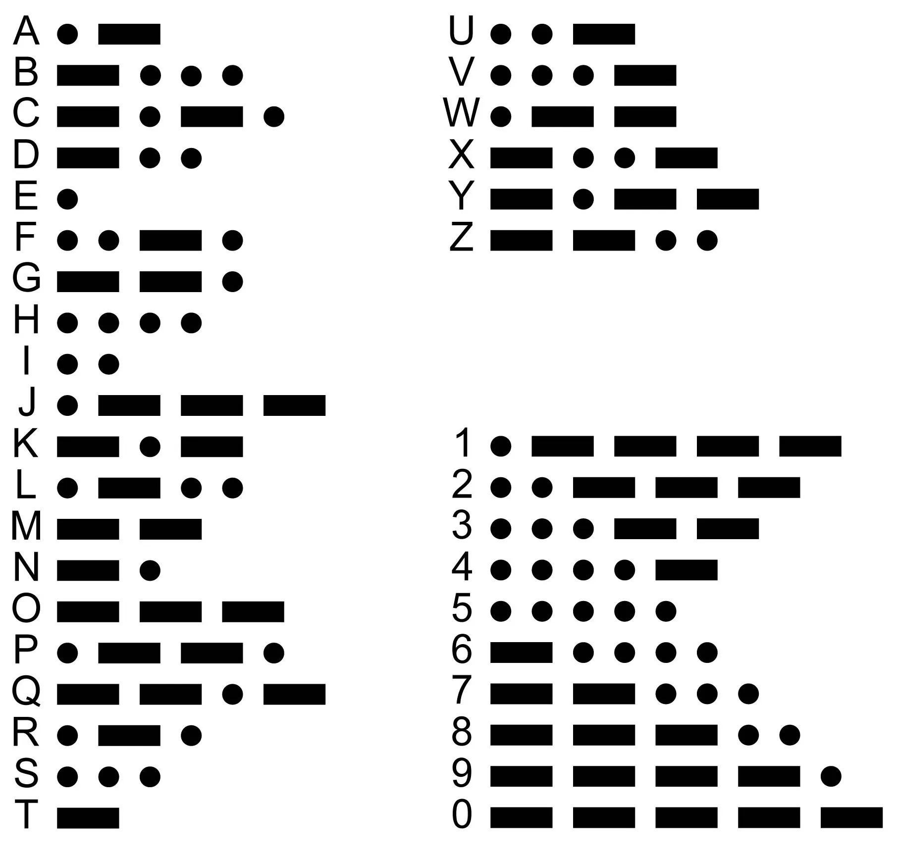
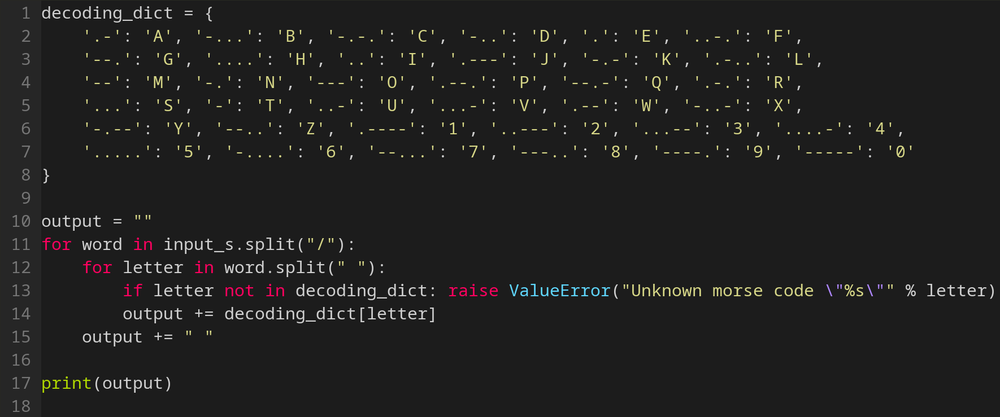
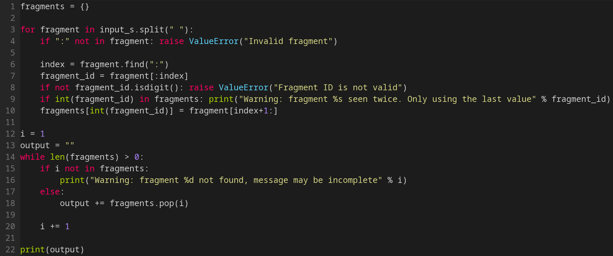
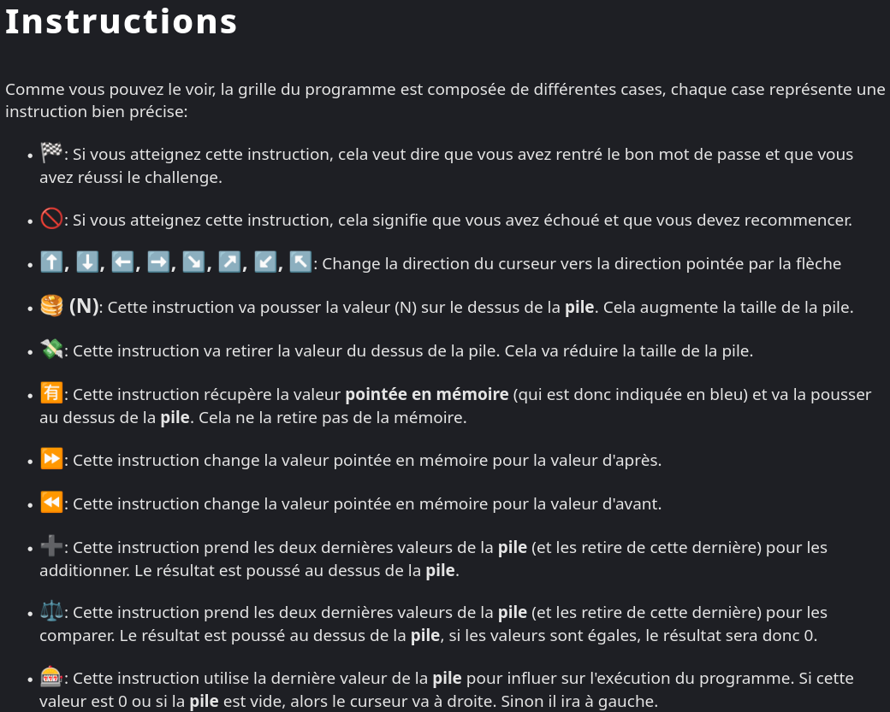
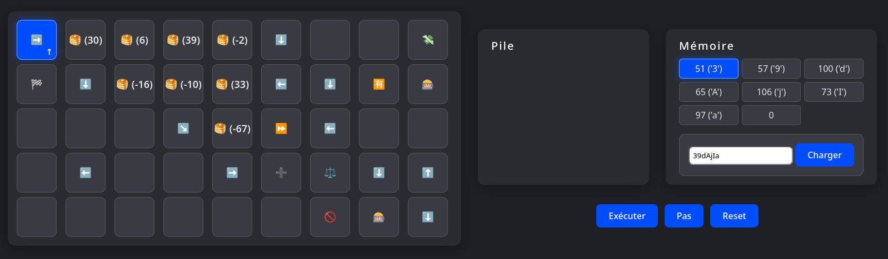
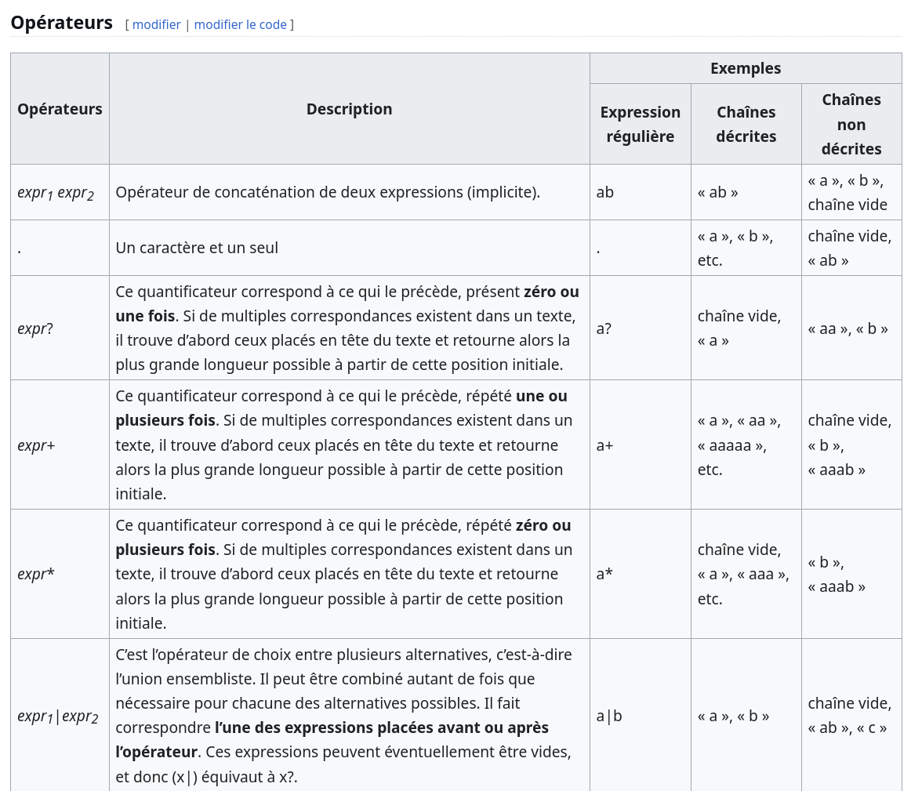

Problématique : Écho de l'Abîme - Décodage sonar Morse
Énoncé / Descriptif
Dans ce problème, on devait simplement décoder du morse international avec python.
Résolution
- Trouver le code morse international.
- Coder un programme répondant aux consignes.
- Tester le code.
- Valider le code pour obtenir le flag.
Outil(s) / Ressource(s) utilisé(s)
- Le code morse international
- Un interpréteur python (fourni)
Difficulté(s) rencontrée(s)
J'ai mis du temps à tester mon code mais je n'ai pas rencontré de difficultés particulières.
Ce que j’ai appris
SOSs'écrit... --- ...en morse.
Captures d’écran



Problématique : Écho de l'Abîme - Reconstruction de fragments
Énoncé / Descriptif
Dans ce défi de programmation, à partir de fragments numérotés dans un ordre quelconque, il fallait remettre ces fragments dans l'ordre.
Résolution
- Coder un programme répondant aux consignes.
- Tester le code.
- Valider le code pour obtenir le flag.
Outil(s) / Ressource(s) utilisé(s)
- Un interpréteur python (fourni)
Difficulté(s) rencontrée(s)
J'ai mis du temps à tester mon code mais je n'ai pas rencontré de difficultés particulières.
Ce que j’ai appris
- Ce problème peut faire référence à la reconstitution de paquets transmis sur un réseau : les paquets n'arrivent pas forcément tous dans l'ordre.
Captures d’écran


Problématique : EVLang
Énoncé / Descriptif
Pour résoudre ce challenge, il fallait comprendre et performer de l'ingénierie inversée sur un langage de programmation exotique inconnu pour trouver l'entrée nécessaire au programme pour qu'il aboutisse avec succès. Heureusement, la documentation de ce langage exotique ainsi qu'un simple debugger étaient fournis.
Résolution
- Approche du programme : le programme semble s'exécuter dans une grille en deux dimensions. Les mots clés sont des émoticônes. Par exemple : les flèches directionnelles redéfinissent le sens d'exécution, les pancakes ajoutent une valeur au dessus de la pile.
- Identifier et comprendre les symboles inconnus dans la documentation comme le billet, la machine à sous, la balance, etc.
- Comprendre le programme global : il ajoute 7 valeurs au dessus de la pile, ensuite, pour chaque valeur en mémoire, tant qu'elle n'est pas 0, il soustrait 67 à cette dernière. Il compare le résultat obtenu avec celui étant dans la pile au début de l'exécution. Si une comparaison échoue, le programme échoue.
- Autrement dit, pour chaque valeur
xdans la pile à l'initialisation,x+67doit se trouver dans la mémoire. - Retrouver le mot de passe initial avec un script python :
''.join(chr(x+67) for x in [-16,-10,33,-2,39,6,30])(Notez que les valeurs sont dans l'ordre inverse car la pile suit le principe LIFO). - Soumettre le flag
FLAG{39dAjIa}sur la plateforme
Outil(s) / Ressource(s) utilisé(s)
- L'interpréteur fourni
- La documentation fournie
- Un interpréteur python (pour reconstituer le mot de passe original)
Difficulté(s) rencontrée(s)
J'ai mis du temps à comprendre le fonctionnement du langage de programmation malgré la documentation. Je me suis aussi trompé dans l'ordre de la pile.
Ce que j’ai appris
- Introduction à l'ingénierie inversée.
- Ce challenge est un exemple de langage exotique mélangeant le befunge et les émoticônes.
- Première approche des debuggers et de la méthode pas à pas.
Captures d’écran


Problématique : Expressionnisme
Énoncé / Descriptif
Cet objectif consistait à décoder une "chaîne de caractères énigmatique" : ^FLAG\{1Z[i|i]_(R3){1}gE(x)\}$.
Cette chaîne de caractères est une expression régulière (RegExp).
Résolution
- Comprendre le type de chaîne de caractères : expression régulière.
- Interpréter l'expression
^FLAG\{1Z[i|i]_(R3){1}gE(x)\}$. ^: sélectionne le début d'une ligne.FLAG: sélectionne "FLAG".\{: correspond au caractère "{" échappé.1Z: sélectionne "1Z".[i|i]: sélectionne "i" ou "i" >> "i"._: sélectionne "_".(R3){1}: groupe "R3" sélectionné 1 fois >> "R3".gE: sélectionne "gE".(x): groupe "x" >> "x".\}: correspond au caractère "}" échappé.$: sélectionne la fin d'une ligne.FLAG+{+1Z+i+_+R3+gE+x+}=FLAG{1Zi_R3gEx}- Soumettre le flag
FLAG{1Zi_R3gex}sur la plateforme.
Outil(s) / Ressource(s) utilisé(s)
- Syntaxe des expressions régulières sur Wikipédia.
Difficulté(s) rencontrée(s)
La difficulté principale était d'identifier la chaîne de caractères.
Ce que j’ai appris
- Les expressions régulières servent à identifier des motifs dans un texte.
Captures d’écran

